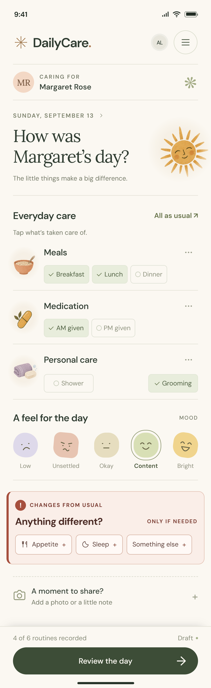
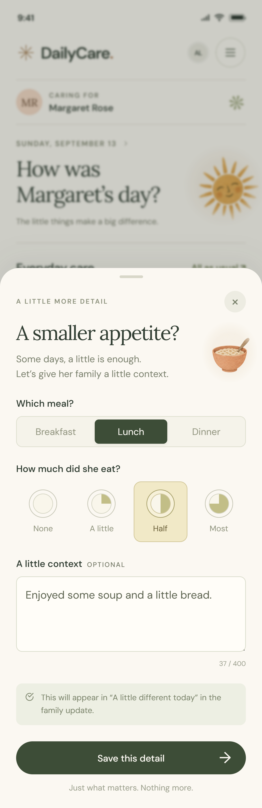
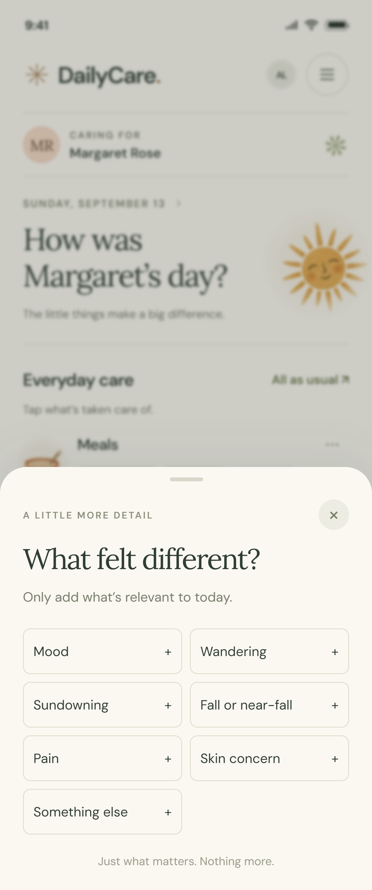
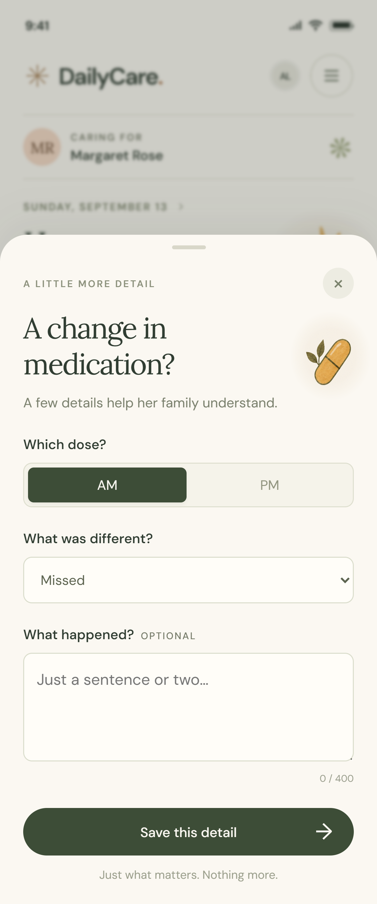
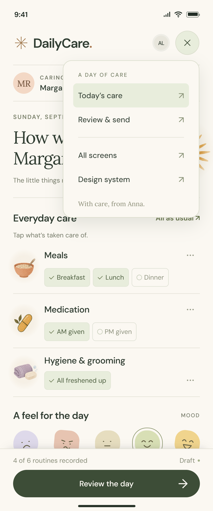

Daily care
THE MAIN ENTRY SCREEN

A few taps for an ordinary day.
Confirm meals and medication, then identify personal care as shower or grooming. Choose a mood, then add a change or personal moment only if there is something to share.
THE EXPERIENCE, FROM EVERYDAY CARE TO FAMILY UPDATE
Most days are normal.
Capture what happened.
Give changes a little more space.
Record care → Add context when needed → Review & send
THE MAIN ENTRY SCREEN

Confirm meals and medication, then identify personal care as shower or grooming. Choose a mood, then add a change or personal moment only if there is something to share.
AN OPTIONAL DETAIL SHEET

This sheet opens when appetite is selected. Plate illustrations show how much was eaten; a short optional note gives the family context.
THE FAMILY UPDATE

Review routine care, changes, and the personal note in one place. Check the family recipients before sharing the update.
Supporting states keep the main screen light.
CHOOSE WHAT NEEDS CONTEXT

“Something else” reveals mood, wandering, sundowning, falls, pain, and skin concerns. Select only what is relevant today.
RECORD AN EXCEPTION

Choose AM or PM and record a missed, refused, delayed, or changed dose. Add a short explanation when it helps.
THE HAMBURGER MENU

The menu links to daily care and review. This prototype also includes shortcuts to all screens and the design-system reference.
C / THE FOUNDATION BEHIND THE SCREENS
The shared colors, typography, icons, spacing, and component states that keep every screen consistent.
A calm canvas, clear actions, and a little warmth.
#FBF8F2App canvas
#303D32Primary text
#3D4D37Primary actions
#E8EDDCRecorded care
#F3D8C5Family summary
#F3E6ACChanges & portions
#E2DCEFMood accents
Warm titles. Clear everyday reading.
Headlines & personal notes
Body text, labels & controls
Familiar symbols with a human touch.
Simple line icons for actions; textured illustrations for care and emotion.
The same visual language, from the first tap to the last.
Color, icon, and label communicate status together.
Distinct expressions; an outline marks the chosen mood.
Show the amount visually, with a plain-language label.
One clear next step. Disabled until a recipient is selected.
Room to breathe, without a dashboard of cards.
8px controls · 16px surfaces · 24px sheets · pill-shaped primary actions
Lightweight by default. Clear when something changes.
01Confirm the ordinary. One tap records routine care.
02Reveal relevant detail. Optional sheets add context.
03Review before sharing. Unrecorded items stay visible.
Visible keyboard focus · text labels beside icons · reduced motion